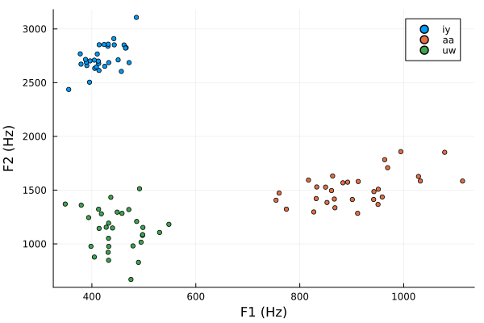
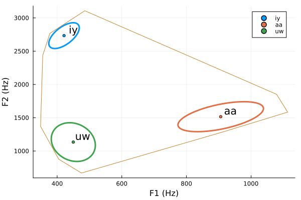

Vowel plotting
The function provided for plotting vowels diplays offers a variety of visualization techniques for displaying a two-dimensional plot for vowel tokens. Traditionally, it is F1 and F2 that are plotted, but any two pairs of data can be plotted, such as F2 and F3, F2-F1 and F3, etc. A traditional, vanilla vowel plot only requires three positional arguments, f1, f2, and cats. Other plotting arguments that the Plots package can accept will be passed through to the first call to plot.
vowelPlot(data.f1, data.f2, data.vowel, xlab="F1 (Hz)", ylab="F2 (Hz)")
This is a traditional vowel plot, with F1 on the x-axis in increasing order and F2 on the y-axis in increasing order. Note that simulated data were generated using the generateFormants function. Specifying a seed value makes the results reproducible. (Keep in mind that if you are generating values for different experiments, reports, studies, etc., the seed value needs to be changed (or left unspecified) so that the same data are not generated every time when they shouldn't be reproducible.)
For those inclined to use the alternate axes configuration with F2 decreasing on the x-axis and F1 decreasing on the y-axis, the xflip and yflip arguments that the Plots.jl package makes use of can be passed in to force the axes to be decreasing, the F2 values can be passed into the first argument slot, and the F1 values can be passed into the second argument slot.
vowelPlot(data.f2, data.f1, data.vowel,
xflip=true, yflip=true, xlab="F2 (Hz)", ylab="F1 (Hz)")I don't personally prefer to look at vowel plots in this manner because I think it unfairly privileges articulatory characteristics of vowel production when examining acoustic characteristics, so subsequent examples will not be presented using this axis configuration. However, the same principle applies to switching the axes around.
The vowelPlot function also allows for ellipses to be plotted around the values with the ell and ellPercent arguments. The ell argument takes a true or false value. The ellPercent argument should be a value between greater than 0 and less than 1, and it represents the approximate percentage of the data the should be contained within the ellipse. This is in contrast to some packages available in R that allow you to specify the number of standard deviations that the ellipse should be stretched to. The reason is that the traditional cutoff values of 1 standard deviation for 67%, 2 standard deviations for 95%, etc. for univariate Gaussian distributions does not carry over to multiple dimensions. While, the appropriate amount of stretching of the ellipse can be determined from the percentage of data to contain (Wang et al., 2015).
vowelPlot(data.f1, data.f2, data.vowel, ell=true, ellPercent=0.67,
xlab="F1 (Hz)", ylab="F2 (Hz)")
Each of the data clouds in the scatter have an ellipse overlaid on them so as to contain 67% of the data. The ellipse calculation process is given in Friendly et al. (2013).
One final feature to point out is that the vowelplot function can also plot just the mean value of each vowel category with the meansOnly argument. Additionally, a label can be added to each category with the addLabels argument, which bases the labels on the category given in the cats argument.
vowelPlot(data.f1, data.f2, data.vowel, ell=true,
meansOnly=true, addLabels=true, xlab="F1 (Hz)", ylab="F2 (Hz)")
The labels are offset from the mean value a bit so as to not cover up the marker showing where the mean value is.
Function documentation
Phonetics.vowelPlot — MethodvowelPlot(f1, f2, cats; [meansOnly=false, addLabels=true, ell=false, ellPercent=0.67, nEllPts=500, markersize=1, linewidth=2, kw...])Create an F1-by-F2 vowel plot. The f1 values are displayed along the x-axis, and the f2 values are displayed along the y-axis, with each unique vowel class in cats being represented with a new color. The series labels in the legend will take on the unique values contained in cats. The alternate display whereby reversed F2 is on the x-axis and reversed F1 is on the y-axis can be created by passing the F2 values in for the f1 argument and F1 values in for the f2 argument, and then using the :flip magic argument provided by the Plots package.
If meansOnly is set to true, only the mean values for each vowel category are plotted. Using ell=true will plot a data ellipse that approximately encompases the percentage of data specified by ellPercent. The ellipse is represented by a number of points specified with nEllPts. Other arguments to plot are passed in through the splatted kw argument. Setting the addLabels argument to true will add the text label of the vowel category above and to the right of the mean.
Args
f1The F1 values, or otherwise the values to plot on the x-axisf2The F2 values, or otherwise the values to plot on the y-axiscatsThe vowel categories associated with each F1, F2 pairmeansOnly(keyword) Plot only mean value for each categoryaddLabels(keyword) Add labels for each category to the plot near the meanell(keyword) Whether to add data ellipses to the plotellPercent(keyword) How much of the data distribution the ellipse should cover (approximately)nEllPts(keyword) How many points should be used when plotting the ellipsemarkersize(keyword) How large the markers should be; passed directly toplotlinewidth(keyword) How wide the line for the llipses should be; passed directly toplot
Phonetics.ellipsePts — MethodellipsePts(f1, f2; percent=0.95, nPoints=500)Calculates nPoints points of the perimeter of a data ellipse for f1 and f2 with approximately the percent of the data spcified by percent contained within the ellipse. Points are returned in counter-clockwise order as the polar angle of rotation moves from 0 to 2π.
See Friendly, Monette, and Fox (2013, Elliptical insights: Understanding statistical methods through elliptical geometry, Statistical science 28(1), 1-39) for more information on the calculation process.
Args
f1The F1 values or otherwise x-axis valuesf2The F2 values or otherwise y-axis valuespercent(keyword) Percent of the data distribution the ellipse should approximately covernPoints(keyword) How many points to use when drawing the ellipse
References
Friendly, M., Monette, G., & Fox, J. (2013). Elliptical insights: understanding statistical methods through elliptical geometry. Statistical Science, 28(1), 1-39.
Wang, B., Shi, W., & Miao, Z. (2015). Confidence analysis of standard deviational ellipse and its extension into higher dimensional Euclidean space. PLOS ONE, 10(3), e0118537. https://doi.org/10.1371/journal.pone.0118537